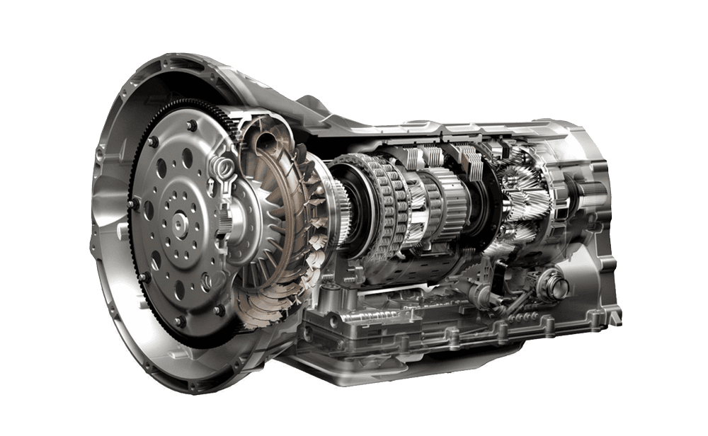

Quality Service for Your Vehicle "Revamp, Restore, and Roll On!"
Welcome to our Car Service Center!
At our center, we are dedicated to providing top-notch automotive care and exceptional service to keep your vehicle running smoothly on the road. Whether you drive a sedan, SUV , truck, or any other type of automobile, our team of experienced and certified technicians is here to ensure your car receives the best care possible.
Why Choose Us?
1. Expert Technicians: Our skilled technicians are well-trained and experienced in handling a wide range of vehicle makes and models. They stay up-to-date with the latest automotive technologies to deliver precise diagnostics and efficient repairs.
2. Quality Service: We take pride in offering high-quality service that exceeds your expectations. From routine maintenance to complex repairs, we use genuine parts and advanced tools to ensure your vehicle performs at its best.
3. Comprehensive Services: Our car service center provides a full spectrum of services, including oil changes, tire rotations, brake inspections and repairs, engine diagnostics, transmission services, and more. Whatever your car needs, we've got you covered.
Schedule an Appointment:
Maintaining your car has never been easier. Simply give us a call or use our online booking system to schedule an appointment that suits your convenience. Our friendly staff will be glad to assist you and answer any questions you may have.
We look forward to serving you and your vehicle with the utmost care and dedication. Experience the difference at our Car Service Center - where your car is our priority!
O U R _ S E R V I C E S
Oil Change
Tire Rotation
Brake Inspection and Repair
Engine Diagnostics
Transmission Services

Air Conditioning Repair
C O N T A C T _ U S
If you have any questions or would like to book an appointment, please don't hesitate to get in touch with us.
Phone: (123) 456-7890
Email: info@carservicecenter.com
Address: 123 Main Street, City, State, Zip Code